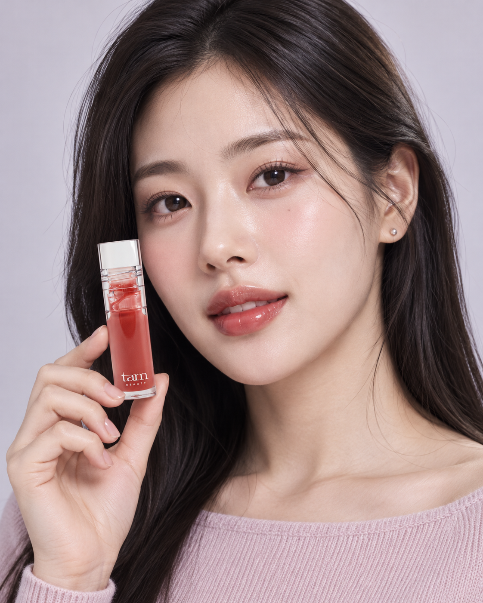
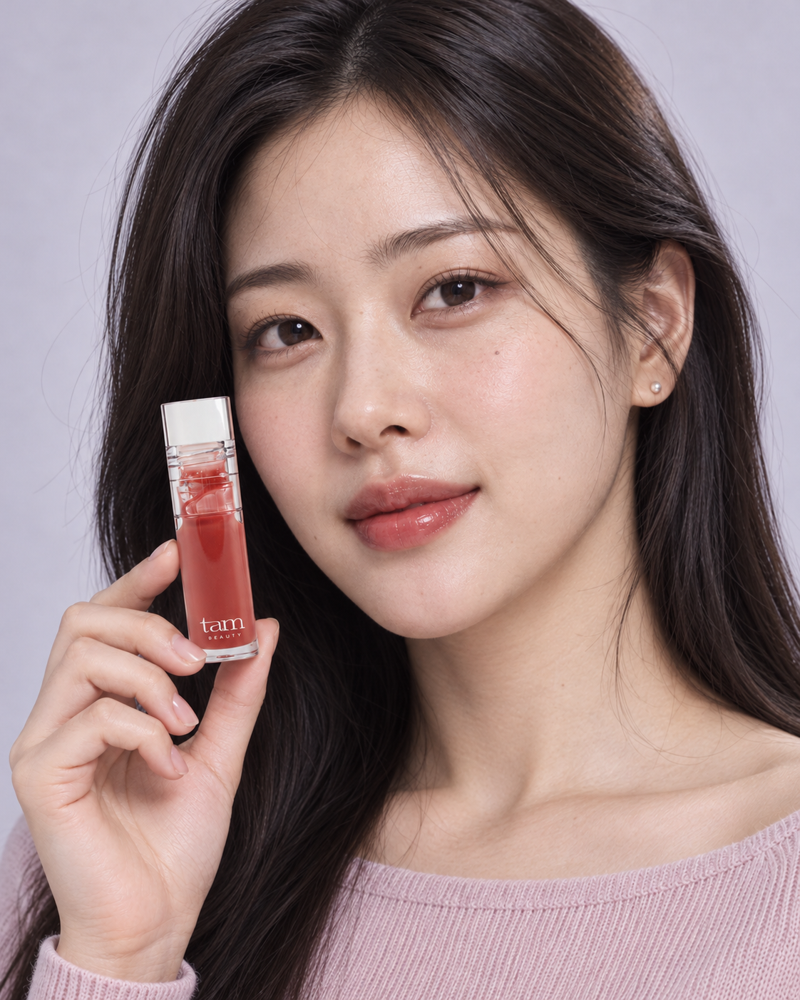

TAM BEAUTY / LIP OIL / V3 / 2026.10.16
보습이 필요한 순간,
꺼내 쓰는 립오일.
넓은 빅 팁으로 부드럽게 펴 바르고, 오일의 촉촉함과 탱글한 광택으로 마무리하는 제품. 컬러는 그 위에 더하는 선택 요소로 정리했습니다.
수정 상세페이지 보기 ↗모델: 정형화된 미인상과 균일한 피부광 조정
승인된 배경·의상·포즈·제품 구도를 유지하면서, 눈과 얼굴의 지나친 정돈감, 대칭적인 표정, 균일한 피부광을 줄이는 방향으로 이미지 편집 도구를 사용했습니다. 피부결만 덧씌우는 방식 대신 눈매·윤곽·표정까지 재지정했습니다.


두 사진 모두 AI 생성 캠페인입니다. 자연스러움의 최종 판단은 시안 비교 대상으로 남겨두며, 실촬영 사진이나 실제 발색 증거로 표시하지 않았습니다.

왜 립오일을 바르는가
탐 공식 사용법은 입술에 보습과 생기가 필요할 때 사용하도록 안내합니다. 기존 상세 하단에서도 보습 용도와 립 메이크업 위의 탑코트 용도를 확인했습니다. V3는 이 두 장면을 중심으로 정리하고, 컬러 설명을 뒤로 옮겼습니다. 탐 공식 상품 정보 · 공식 상세 원본
립오일과 틴트는 보습·광택·컬러 기능이 겹칠 수 있습니다. “틴트는 건조하다”, “립오일은 착색이 없다”처럼 제품군 전체를 단정하는 비교는 사용하지 않았습니다.
| 우선순위 | 구매 이유 | 페이지 반영 |
|---|---|---|
| 1. 빅 팁 | 넓은 면과 둥근 형태로 입술 곡면을 따라 부드럽게 펴 바르는 경험. | 모델 다음 첫 제품 설명과 이미지로 이동. 헤드라인 “빅 팁으로 넓게, 오일로 촉촉하게.” |
| 2. 보습과 오일광 | 입술에 촉촉함과 윤기가 필요할 때 사용할 이유. | 맨 입술의 보습·생기 / 립 메이크업 위 광택이라는 두 사용 장면. |
| 3. 성분 지원 | 촉촉한 사용감을 설명하는 오일 포뮬러. | 해바라기씨오일·녹차씨오일만 작은 FORMULA NOTE로 소개. |
| 4. 쿨링·젤리광 | 시원한 터치와 도톰해 보이는 메이크업 연출. | 짧은 마무리 블록. 실제 볼륨 증가나 지속 시간으로 표현하지 않음. |
| 5. 컬러 | 원하는 분위기를 고르는 마지막 선택. | 기존 공식 제품 사진과 실제 발색 유지. |
성분을 짧게, 정확하게
01 퍼스트 러브·02 인피니트 로즈·03 나이트 뷰의 전성분 모두에서 해바라기씨오일과 녹차씨오일을 확인했습니다. 본문에는 “두 가지 오일을 담은 촉촉한 립오일 포뮬러”로만 소개했습니다. 공식 전성분
기존 상세는 00 립글로스와 립오일을 함께 설명하고 있습니다. 왕벚나무꽃추출물은 립오일 3색의 전성분에서 확인되지 않아 포함하지 않았습니다. 특정 성분의 함유 사실을 보습 지속 시간, 함량 또는 임상 효능의 근거로 확대하지 않았습니다.
“일반 브러쉬보다 5배”는 기존 상세에 있지만 비교 대상과 측정 조건을 확인하지 못해 사용하지 않았습니다. 빅 팁의 형태와 사용 경험을 설명했습니다. 공식 팁 원본
제품군 확인에 사용한 레퍼런스
- 디올 립 글로우 오일 공식 설명: 보습·광택과 부드러운 어플리케이터를 함께 설명하는 구조를 확인했습니다. 디올의 지속 시간·pH 반응·임상 결과는 탐에 적용하지 않았습니다.
- 클라랑스 립 컴포트 오일 공식 설명: 사용감·어플리케이터·단독 및 레이어링 용도를 확인했습니다. 슬리핑 마스크 사용이나 타사 성분은 탐 카피에 옮기지 않았습니다.
- 이전 힌스·딘토·라네즈 시각 레퍼런스 분석: V2의 배경, 색감, 제품 연출과 전체적인 분위기는 유지했습니다.
제작 파일
V3 제작 패키지 ZIP · 사실 확인·변경 범위 기록 · 화면 점검 기록
860px 폭 상세 PNG 5장과 제품 정보 PNG 1장, 수정 가능한 HTML/CSS, 이미지, 프롬프트를 포함합니다. 이미지 편집은 기본 내장 ImageGen 도구로 진행했습니다. 기존 V2는 비교용으로 유지했고, 공식몰 상품은 변경하지 않았습니다.